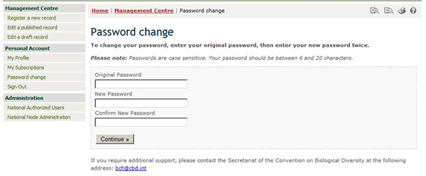

Al crear registros nuevos, los usuarios del CIISB deben asegurarse de que su información sea lo más exacta y completa posible antes de su publicación. Los campos obligatorios están marcados con un asterisco rojo. Los documentos que carezcan de la información obligatoria no podrán ser publicados.

Figura 17
Todos los Formatos comunes CIISB deben ser completados al menos en uno de los 6 idiomas oficiales de las Naciones Unidas (árabe, chino, inglés, francés, ruso y español).
Por favor tenga en cuenta que el botón para Especificar idioma, que aparece en la parte superior del formulario de inscripción en línea, permite a los usuarios del CIISB indicar en qué idiomas están ingresando la información.

Figura 18

Figura 19
Los usuarios del CIISB pueden adjuntar archivos a sus documentos en cualquier idioma (botón Attach File). Sin embargo, se recomienda encarecidamente proporcionar traducciones de los documentos en uno o más de los 6 idiomas oficiales de las Naciones Unidas.
El botón Add Website permite agregar un vínculo a un sitio web. Note que adjuntar un archivo es preferible en vez de un vínculo, debido a que ellos pueden ser estar disponibles en forma permanente; un vínculo puede, eventualmente, estar roto.
El botón para revisión (botón Review), tanto en la parte superior como en la parte inferior del formato común en línea, permite a los usuarios del CIISB revisar su información tal y como aparecerá en el registro una vez publicado.

Figura 20
Al hacer clic en el botón de revisión se abrirá la página de revisión, en la que se presentan los errores encontrados, si los hay, y se indica en cada error el nombre del campo y la descripción del error. Además, también se destacan los campos obligatorios que no se hayan completado.
Haciendo clic sobre Edit, usted vuelve al campo que debe ser modificado. Si usted no puede completar el formulario en ese momento, se recomienda que lo salve como un borrador.
Es muy importante revisar el documento para verificar que se haya ingresado toda la información requerida, y que la misma sea veraz y precisa antes de su publicación.

Figura 21
El botón para guardar cambios (botón Save changes), tanto en la parte superior como en la parte inferior de los formatos comunes en línea, permite: a) presentar el documento para su publicación o b) Guardarlo como un borrador. Un documento guardado como borrador estará disponible en la sección de Editar un documento borrador para acceso posterior.

Figura 22
El botón para cancelar (botón Cancel), tanto en la parte superior como en la parte inferior del formato común en línea, le permite cancelar los cambios que haya hecho.

Figura 23
En muchos formatos comunes, algunos campos se refieren a información que se registra en otro documento. Tomemos por ejemplo las referencias a los organismos receptores o a los organismos parentales, que son necesarias cuando se registran los OVM.

Figura 24
Al hacer clic en el botón Select a reference, usted puede seleccionar una referencia hacia un documento existente en la lista que aparece.

Figura 25
Si la referencia que usted necesita no está disponible en la lista, usted puede crear un nuevo registro usando el botón Create a new record.

Figura 26
En este caso, el formato común en línea a completar aparecerá en la pantalla encima de la página que estaba bajo edición anteriormente, y deberá ser finalizado y publicado a fin de que sea insertado en la lista de referencia desplegable del formulario anterior.

Figura 27
Por esta razón, se recomienda siempre que se completen todos los formatos comunes fuera de línea de modo de reunir la información necesaria antes de llenar los formatos comunes en línea.
Al completar los formatos comunes fuera de línea, las referencias a otros documentos del CIISB podrán especificarse ingresando el identificador del registro del CIISB. Cuando se necesita una referencia a un registro nuevo, que aún no ha sido registrado en el CIISB y por lo tanto aún no tiene identificador de registro, el registro referenciado, creado con el formato común pertinente, puede ser adjuntado.

Figura 28
En algunos casos, al completar el documento, se le planteará al usuario diferentes preguntas. Dependiendo de la respuesta que se provea al sistema, aparecerán en pantalla nuevos campos a completar.

Figura 29
Por ejemplo, en el formulario en línea de arriba, si en la sección Category of DNA sequence, se selecciona la opción Protein coding sequence, aparecerá en pantalla la sección llamada Characteristics of the protein coding sequence. Ver figura abajo.
Figura 30
Del mismo modo, si se selecciona la opción Tolerance to abiotic stress, aparecerá una nueva sección con la lista de las posibles tolerancias al estrés abiótico.
Figura 31
Para los formatos comunes fuera de línea se aplica un proceso similar. Los formularios orientan al usuario indicando la sección que deberá completar posteriormente, dependiendo de la respuesta proporcionada.
Figura 32
En caso de que necesite añadir documentos electrónicos para que estén disponibles junto con los formatos comunes en línea, usted puede adjuntarlos y/o proporcionar una dirección de Internet (URL). Sin embargo, se recomienda adjuntar los documentos pertinentes debido a que las direcciones URL pueden cambiar en el futuro.
Figura 33
Todos los formatos comunes proporcionan un campo de Información adicional al final del registro donde usted puede agregar texto, dar una dirección de Internet (URL) y/o adjuntar archivo(s) adicional(es).

Figura 34
Algunas categorías de información, tales como Autoridades nacionales competentes, requieren confirmación o actualización luego de un año a partir de la fecha de presentación. Transcurrido el plazo, se le solicitará al autor del registro que confirme o actualice el registro en un plazo de 3 meses. Si esta acción no se ha cumplido al expirar este período, el registro será marcado como “no confirmado”.
El objetivo de este mecanismo es asegurar que la información sea mantenida actualizada.
Figura 35
En otros casos, el período de caducidad es opcional y se le solicitará al autor (al registrar un documento) que indique si la confirmación o actualización son necesarias después de dos años a partir de la fecha de presentación. Seleccionando esta opción, luego de dos años se le recordará al autor mantener la información actualizada.

Figura 36